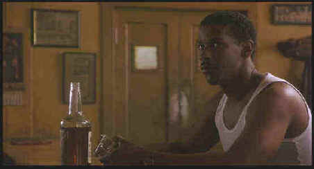

Columbia/1995/101m/ANA 1.85, FS 1.33
 |
Easy Rawlins: "When somebody tells me there ain't nothing to worry about, I usually look down to see if my fly open" ©Columbia |
Easy Rawlins lets
integrity get in the way of his factory job and finds himself loose on the street and
desperate for the buck to pay the bank. Rawlins gets seduced into the devious world of Los
Angeles politics and guns with the promise of easy money and limited involvement. It just
doesn’t seem to work that way. Before Devil in a Blue Dress wends its way to
conclusion, Rawlins in implicated in a number of murders, is battered about by forces on
both sides of the fence and has to dig into his questionable past to come up with the
solution for survival. Rawlins is a great character and deserves a sequel or two, but the
pale performance of Devil in a Blue Dress at the box office may preclude that
future.
The film is photographed with a mostly nostalgic patina by
skillful Tak Fujimoto. No doubt it’s the look that Franklin wanted to evoke a period
gone by. I think Devil in a Blue Dress would have worked so much better with an
emphasis on gloss: glittering nights, ruby lips, mirrored pistols and reflections on
polished period cars.
The magnetic star presence of Denzel Washington is once
again on display in Devil in a Blue Dress. This guy is a natural, a throw-back to
the great stars of yesteryear. Easy Rawlins is a worthy character to make best use of
Washington’s charisma and sex appeal. Whether managing the unpredictable Mouse,
played with gleeful menace by Don Cheadle, or reacting the overtures of a sexy Jennifer
Beals, Washington is in the driver’s seat. Even when he is clobbered by cops or
gunsels he dominates the scenes. Credit Franklin for doing a fine job in guiding his
actors to excellent screen performances.
The music alone is enough reason to visit Devil in a
Blue Dress. Blues and Jazz of the forties lace the soundtrack with authenticity. The
wail of T-Bone Walker, the flash of Duke Ellington or the period sound of Kay Kyser
accompany the images. The outstanding score by Elmer Bernstein adds an hardened edge to
the material and unifies musical elements brilliantly.
This outstanding special edition DVD from Columbia captures
the mood sought after by director Carl Franklin. Shadow detail is quite good in difficult
lighting circumstances. The image is sharp and color is accurate. Fujimoto’s
accomplished photography which perfectly lights black and white actors in the same scenes
is transferred extremely well to DVD. The Dolby Digital 5:1 sound is excellent. Surround
information enhances the action, but is not especially aggressive. It has more of an
overall ambient quality to it. The music sounds great. Whether period songs or
Bernstein’s score, it’s clean and breezy. The world of Easy Rawlins makes an
easy move to DVD. The Don Cheadle screen test is a lot of fun to watch. Cheadle exhibits
the charisma that makes Mouse a fascinating character. Off screen, the voices of Carl
Franklin and Denzel Washington throw the Easy Rawlins dialogue at Cheadle. One wonders if
maybe Franklin should give acting a try with those excellent line readings. Carl
Franklin’s audio commentary adds another dimension to viewing Devil in a Blue
Dress. Providing knowledgeable insights into Los Angeles during the forties. My DVD
defaulted to English subtitles on, an annoyance to be sure.